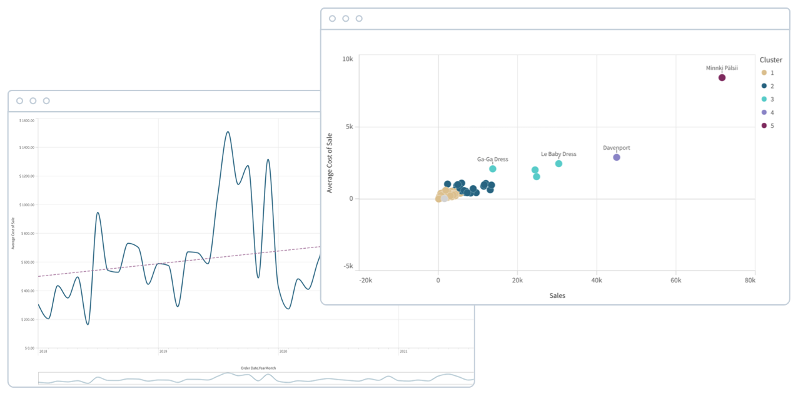

Self-service Visualization
데이터의 크기(또는 크기)에 상관없이 데이터를 쉽게 결합, 로드, 시각화 및 탐색할 수 있습니다. 검색, 선택, 드릴다운 또는 줌 아웃 하여 답을 찾거나 관심 있는 항목이 있으면 즉각적으로 답을 얻을 수 있습니다. 모든 차트, 테이블 및 오브젝트는 대화형이며 각 동작과 함께 현재 시각화 화면에 변경이 됩니다. 세계적인 광범위한 라이브러리를 통하여 현명한 시각화를 통해 의미를 전달할 수 있고, 정확한 데이터 표현할 수 있도록 도와줍니다. 또한 Insight Advisor의 지원을 통해 자동 생성 분석, 차트 권장 사항 및 데이터 조합을 신속하게 파악할 수 있도록 제안해줍니다.
Interactive Dashboards
강력한 대시보드를 생성, 공유 및 배포하는 기능을 가지고 있습니다 이러한 기능은 경영진, 비즈니스 리더 및 비즈니스 분석을 위한 정보 제공을 지원하고있습니다. 모든 요소는 대화형이며, 과거의 정적 대시보드를 뛰어넘는 기능을 가지고 있습니다. 쉽게 탐색을 할 수 있으며, 어디서든 선택 가능하며, 글로벌 검색을 통해 컨텍스트를 세분화되어 있습니다. 이러한 점을 통해 필요한 정보를 신속하게 파악할 수 있습니다. Qlik Sense의 DashBoard를 통해 더 나은 데이터 기반 의사 결정을 내릴 수 있는 강력한 출발점이 됩니다.
Search & Conversational
자연어를 사용하여 통찰력을 생성하고 간단하고 강력한 검색 방법을 제공합니다. Insight Advisor는 자연어 처리(NLP)를 기반으로 사용자에게 가장 관련성이 높고 영향력 있는 분석 및 통찰력을 자동으로 생성되어 제공됩니다. 대화형 분석을 통해 Qlik Sense에서 완전한 대화형 자연어 경험을 얻을 수 있습니다. Insight Advisor는 자연어 처리 및 생성(NLP & NLG)을 사용하여 모든 Qlik Sense 앱에서 사용자의 의도를 파악하고 관련 된 결과 값을 얻을수 있습니다.
Alerting & Action
알림 및 자동화를 통해 데이터 변화에 즉시 대응합니다. 사용자가 사전 예방적으로 비즈니스를 모니터링하고, 통찰력을 바탕으로 적시에 조치를 취할 수 있도록 지원하는 정교한 데이터 기반 경고 서비스를 제공합니다. NAT의 알림 기술은 다른 제품과 달리 개별 시각화를 기반으로 하지 않고 완전히 데이터 중심이므로 제한 없이 모든 데이터를 모니터링할 수 있습니다. 또한 일상적인 작업을 자동화하고 주요 툴이 분석과 함께 작동할 수 있도록 지원하는 이벤트 기반 작업을 통해 알림을 제공하는 데 그치지 않습니다. NAT의 시각적 로우코드 환경인 Application Automation을 사용하여 필요한 모든곳에서 사용할 수 있습니다.
Reporting
정기적으로 예약된 PDF 전달을 위해 자신과 다른 사용자가 Qlik Sense 시트 및 개별 분석을 쉽게 정기적으로 받아 볼수 있습니다. 또한 Microsoft® Office 및 PDF와 같은 인기 있는 형식으로 멋진 보고서를 작성, 게시 및 공유할 수 있습니다. 매우 유연한 설계 및 서식 제어 기능을 통해 Qlik Sense 분석을 사용하여 보고서를 작성할 수 있습니다. 전자 메일, 공유 폴더 또는 중앙 집중식 허브를 통해 맞춤화된 보고서를 쉽게 배포 할수 있습니다. 또한 Insight Advisor의 지원을 통해 자동 생성 분석, 차트 권장 사항 및 데이터 조합을 신속하게 파악할 수 있도록 제안해줍니다.

Mobility
Qlik Sense는 모바일를 위해 구축되었으며, 플랫폼 고유의 반응형 설계와 터치 상호 작용이 있습니다. iOS 및 Android용 네이티브 앱을 통해 모든 기기에서 쉽게 분석을 생성하고 탐색할 수 있습니다. 한 번 구축하면 어디에서나 사용할 수 있습니다. 또한 완전한 대화형 오프라인 분석 및 통합 알림 기능을 통해 의사 결정 시 통찰력 및 조치에 대한 푸시 알림을 받을 수 있습니다.
Custom & Embedded
Qlik Sense는 가장 복잡한 분석 문제까지 해결할 수 있도록 지원하는 완벽한 데이터 분석 솔루션입니다. 전체 개방형 API 집합을 통해 분석 솔루션을 완벽하게 사용자 정의할 수 있습니다. 사용자 지정 애플리케이션, 새로운 시각화 및 확장을 신속하게 개발하거나, 사람들이 매일 집중하는 애플리케이션 및 프로세스에 완전한 대화형 분석이 가능합니다.

Close
Advanced Analystics
Qlik Sense를 사용하면 고급 분석의 이점을 얻기 위해 데이터 과학자가 될 필요가 없습니다. 사용자는 엔진과 머신 러닝 모델과의 실시간 통합을 통해 계산 및 예측을 대화식으로 탐색할 수 있다. Qlik Sense는 실시간 엔진 레벨 데이터 교환과 고급 분석 통합을 제공하므로 사용자는 Qlik Sense 앱에서 시각적 선택을 통해 계산을 탐색할 수 있으므로 고유한 질문을 하고 즉각적인 답변을 얻을 수 있습니다.